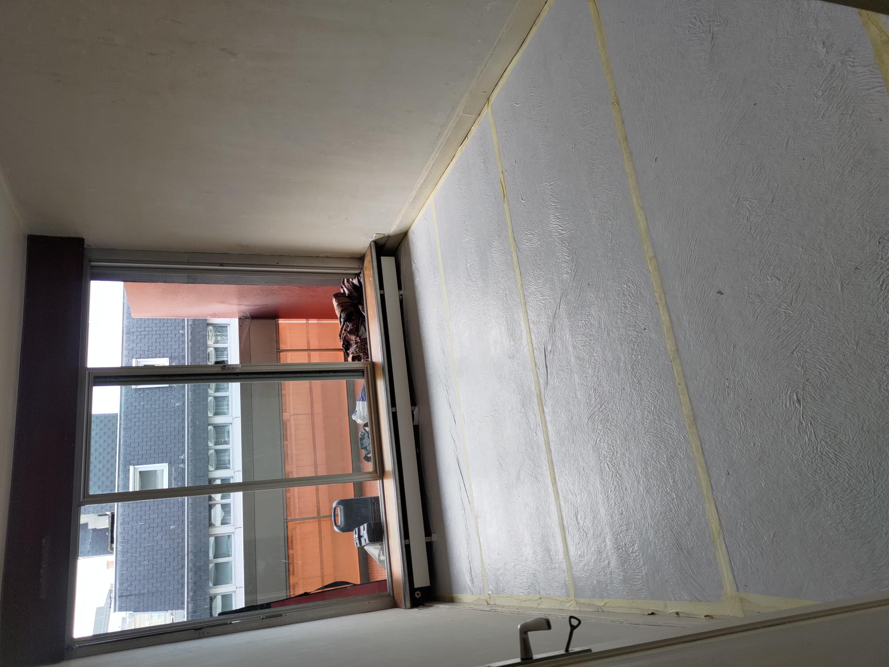
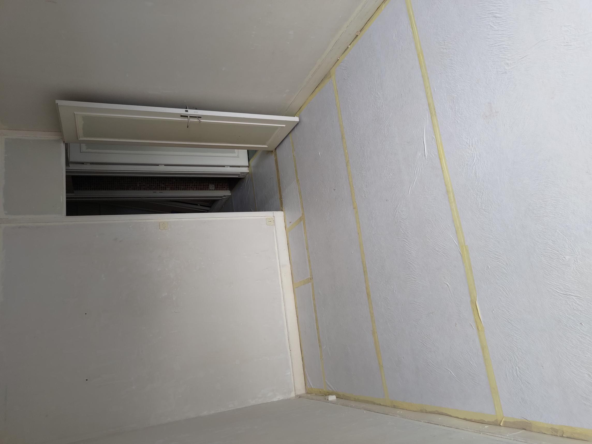

- Il y a quelque années j'ai aidé mon père dans son travail dans les chantiers, ainsi j'ai eu plusieurs tâches à accomplir comme:
Le lissage des mursLe MénageLa destruction de certains murs
Pour en citer quelques unes... ainsi, j'ai pu acquerir un avant-gout du monde du travail puisque avant ça j'ai jamais vraiment travailler. En voici quelques images:


Stages
- Au college(plus precisement l'année de 3eme) on a du faire un stage d'au moins 1 semaines et ensuite faire un petit rapport de ce que ça nous à apporter, moi j'ai fait mon stage avec un ami du côté de mon père qui travaille la Menuiserie(travailleur du bois afin de crée differents éléments de construction comme les portes, escaliers, etc...)
- Cette semaines il construisait une armoire de A à Z, je le regardais travailler tout en apprennant, il m'expliquer ce qu'il fesait et m'a aussi enseigner son métiers(en tout cas les bases). Cette experiences m'a appris à manier certains outils comme la scies et l'assemblage des éléments c'etait une très bonne experiences.